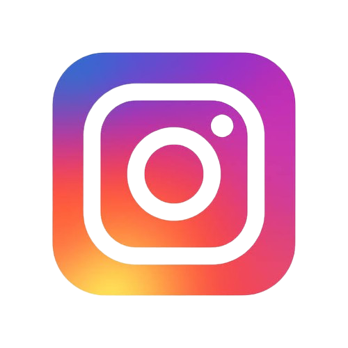
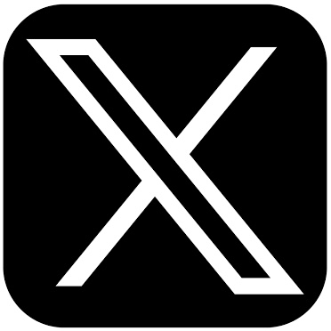
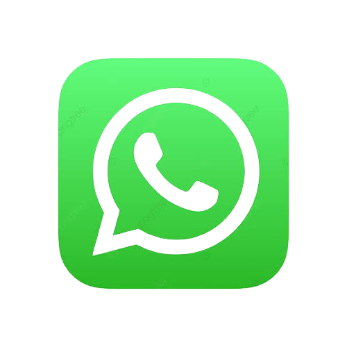

Belajar HTML Dasar Chapter 2
Rangkuman Chapter
Di chapter ini saya akan menggunakan semua tag, element & attribute HTML yang telah dipelajari dalam kurun waktu 2 bulan terakhir, dengan rangkuman materi sebagai berikut:
- Fungsi dan Penggunaan KOMENTAR dan deklarasi DOCTYPE
- Fungsi dan Pengunaan Absolute URLs vs Relative URLs
- Fungsi dan Penggunaan HTML Entities
- Fungsi dan Penggunaan tag <a>; <picture>; <img>; <p>; <hr>; <br>; <h1> s.d <h6>; <ul>; <ol>; <li>; <source>; <link>
- Fungsi dan Penggunaan attribute "href"; "target"; "id"; "class"; "src"; "alt"; "rel"; "type";
- Penggunaan skema "mailto:" dan "tel:" di dalam attribute "href"
Selain materi diatas yang sudah saya kelompokkan, ada materi tambahan lagi yaitu tentang "Formating Text". Layaknya pada microsoft word yang dapat merubah ukuran, warna, dan jenis teks, di HTML pun kita bisa melakukannya dengan tag sebagai berikut:
- Tag <b> untuk menampilkan teks tebal/bold
- Tag <strong> dapat menampilkan teks tebal seperti menggunakan tag <b>, namun tag <strong> lebih di sarankan penggunaannya pada teks penting
- Tag <i> dan <em> untuk menampilkan teks miring
- Tag <small> untuk menampilkan teks kecil
- Tag <del> untuk menampilkan teks yang dicoret
- Tag <ins> untuk menampilkan teks dengan garis bawah
- Tag <sub> untuk menampilkan subscript teks
- Tag <sup> untuk menampilkan supscript teks
- HTML selain formating color menggunakan nama (Red, Blue, Green)
juga support formating color teks HEX, RGB, HSL dll.
Praktek Penggunaan
Article I
Saya disini akan membuat sebuah Website dengan mengimplementasikan materi yang sudah dipelajari dan di sebutkan di Rangkuman Chapter. Saya akan mulai dari membuat article yang membahas tentang isu paling panas akhir tahun ini, isu apa lagi kalau bukan pilpres 2024 yang akan di laksanakan serentak pada 14 Februari 2024.
Dikutip dari kominfo.co.id bahwa presiden Joko Widodo mempimpin rapat terbatas (ratas) di Istana Kepresidenan Bogor pada minggu, 10 April 2022 dan berikut yang beliau sampaikan:
“Saya kira sudah jelas semuanya sudah tahu bahwa pemilu akan dilaksanakan 14 Februari 2024. Ini perlu dijelaskan jangan sampai nanti muncul spekulasi − spekulasi yang isunya beredar di masyarakat bahwa pemerintah tengah berupaya untuk melakukan penundaan pemilu atau spekulasi mengenai perpanjangan jabatan Presiden dan juga yang berkaitan dengan soal tiga periode . Karena jelas bahwa kita telah sepakat pemilu dilaksanakan tanggal 14 Februari dan pilkada dilaksanakan nanti di November 2024, sudah jelas semuanya,” untuk article lengkapnya disini.
Per−tanggal 24 December 2024 telah dilaksanakan penyampaian gagasan ke publik dari masing−masing capres melalui media social dan platform media lain seperti Youtube. Antar capres dan cawapres pun juga telah dilakukan debat yang disiarkan langsung di channel YouTube resmi compasTv.
Article II
Untuk article kedua ini akan membahas tentang
KOMPAS.com−Tingkat okupansi hotel di kawasan The Nusa Dua di Kabupaten Badung, Bali, mencapai 73 persen saat periode Natal 2023 dan tahun baru 2024 (Nataru).
“Okupansi itu meningkat 3,28 persen jika dibandingkan periode (yang) sama (tahun) 2022 yang mencapai 70,68 persen,” kata General Manager The Nusa Dua, I Gusti Ngurah Ardita, dikutip dari Antara, Minggu, 24 December 2023.
Ardita melanjutkan, jumlah tamu wisatawan mancanegara (wisman) yang menginap di kawasan seluas 250 hektar ini terpantau telah meningkat sejak Jumat, 22 December 2023. Lanjut baca…
Penutup
Sekian website ini di buat dengan segenap hati dan pikiran. Disclaimer bahwa isi content di website ini adalah copy paste dari article yang sudah tayang di website Kominfo dan Kompas. Tidak ada maksud dan tujuan lain selain hanya untuk latihan menerapkan codingan html yang telah di pelajari dari video di channel youtube "Programmer Zaman Now".
Contact Information
email
 facebook
facebook
instagram
twitter
whatsapp
telepon